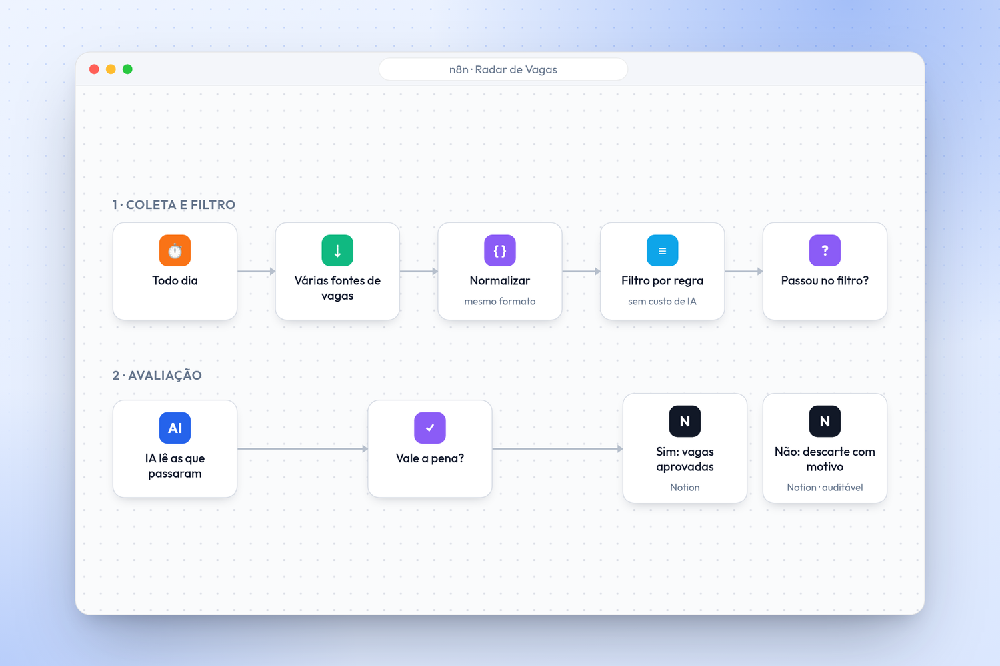

Automação com IA (n8n) · 2026
Radar de Vagas.
Um workflow em n8n que busca vagas de tecnologia em várias fontes, filtra o que não faz sentido, usa IA só quando precisa e salva tudo no Notion, inclusive o que foi descartado.

Por que eu fiz
Procurar vaga é um trabalho repetitivo: abrir vários sites, ler dezenas de descrições parecidas e descartar a maioria. Eu queria receber só o que faz sentido para mim, sem passar horas rolando lista.
A ideia
Um radar que roda sozinho, junta vagas de fontes diferentes num formato só, separa as que valem a pena e entrega tudo organizado no Notion.
Com um detalhe importante: o que foi descartado também fica salvo, com o motivo. Filtro automático erra, e eu quero poder conferir o que ele jogou fora.
Processo criativo
Cada fonte de vaga devolve os dados de um jeito. O primeiro passo foi normalizar: título, empresa, local, modelo de trabalho e link no mesmo formato, não importa de onde veio.
Depois veio a parte de custo. Mandar toda vaga para a IA avaliar seria caro e desnecessário, porque muita coisa dá para descartar com regra simples antes. Então a IA só entra quando a vaga já passou pelos filtros básicos e realmente precisa de uma leitura mais cuidadosa.
Decisões que eu tomei
- Normalização primeiroDados no mesmo formato deixam o resto do fluxo simples, não importa quantas fontes eu adicione.
- IA só quando precisaFiltro por regra antes, modelo depois. Menos chamada, menos custo, mesma qualidade.
- Descartes auditáveisTudo que foi recusado fica registrado no Notion com o motivo, para eu revisar o filtro.
O que ficou
Automação com IA não é colocar IA em tudo. É saber em qual etapa ela realmente agrega e deixar o resto com lógica simples, que é mais barata e mais previsível.